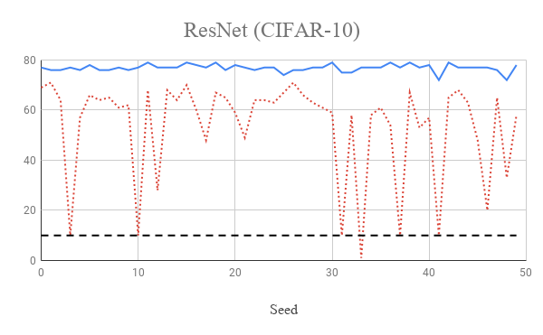

On Improving Unsupervised Learning with DeepCluster
Srinivas Eswar, Ankit Srivastava, Chunxing YinFall 2018 CS 4803 / 7643 Deep Learning: Class Project
Georgia Tech
This webpage template is based on a similar template from Dr. Devi Parikh's Intro to Computer Vision course.
Abstract
One or two sentences on the motivation behind the problem you are solving. One or two sentences describing the approach you took. One or two sentences on the main result you obtained.Introduction / Background / Motivation
What did you try to do? What problem did you try to solve? Articulate your objectives using absolutely no jargon. (5 points)
Datasets used in the state-of-the-art neural network training, even ImageNet [2] which contains millions of images, are relatively small as compared to the capacity of the current networks. But, building larger labeled datasets for supervised learning requires a tremendous amount of manual work. Therefore, a natural way forward is to train on massive unlabeled datasets using unsupervised learning [4]. However, currently, there is an accuracy gap between the accuracy of models trained using unsupervised learning as compared to those trained using supervised learning. For example, the difference between the accuracy of supervised AlexNet [2] and unsupervised DeepCluster [1] on classifying images in the ImageNet dataset is between 3% to 12%. This gap needs to be closed for the unsupervised learning based approaches to gain popular acceptance.In this project, we attempted to close this gap by trying to improve the methodology used in the state-of-the-art in unsupervised learning, i.e., DeepCluster [1]. The training method in [1] relies on generating "pseudo-labels" for images and then using these labels for training the network iteratively. Specifically, we set out to confirm our intuition about some problems with the way the pseudo-labels for images are generated in [1] and, then, explore different ideas to address those problems. We hoped that this would improve the accuracy of models trained using unsupervised learning methods for the image classification task.
How is it done today, and what are the limits of current practice? (5 points)
The unsupervised learning in [1] is done by alternating between the following two steps:- Output features for all the training images are generated by doing a forward pass through the model. These features are then clustered using k-means clustering algorithm. The cluster assignments are used as pseudo-labels for the corresponding training images.
- The pseudo-labels generated in the previous step are used for updating the model parameters with one pass through the training dataset.
Based on our prior experience with the k-means algorithm, we suspected that the algorithm labels clusters in a non-deterministic way, i.e., given the same features, the algorithm can permute the pseudo-labels assigned to images across epochs. This means that, for example, in a case with three clusters, the output cluster assignment can be any arbitrary mapping of the ordered set (0, 1, 2). Since the loss function used in [1] is not permutation invariant, we conjectured that if the pseudo-labels are indeed getting permuted then it would lead to the loss of accuracy and also increase the training time of the models.
Who cares? If you are successful, what difference will it make? (5 points)
Our project is aimed at improving the accuracy of the state-of-the-art in unsupervised learning methods. As discussed earlier, the accuracy gap between supervised and unsupervised learning methods is hindering widespread acceptance of the unsupervised learning methods. If the work done in this project makes a step towards closing this gap, then that would assist in a move towards using larger unlabeled datasets which can utilize current capacity of neural networks. The training time of the models using unsupervised learning would also be reduced, which will further its appeal. Moreover, this would allow existing stable supervised learning networks to be extended using unsupervised learning on pseudo-labels.Approach
DeepCluster uses a standard AlexNet architecture which consists of five convolutional layers with 96, 256, 383, 384, and 256 filters; and three fully connected layers. The original experiments trains for 500 epochs on ImageNet, which takes 12 days on a Pascal P100 GPU. : Due to the limited time and resources, we scale down the size of each problem as follows:- Run k-means on a randomly generated mixture of Gaussians
- Permuting the target labels during traning VGG [5], ResNet [6], twoLayerNN for both CIFAR-10 and CIFAR-100 [7].
What did you do exactly? How did you solve the problem? Why did you think it would be successful? Is anything new in your approach? (10 points)
The purpose of this project was to improve the accuracy of classification achieved in [1]. We believed that this was an attainable objective because of the following two key intuitions about the approach used in [1] for training the model: 1) the labels generated by k-means clustering can permute across runs, and 2) permuting the target labels during training will have a detrimental effect on the model. Since our claims were based on conjecture, we first had to prove that our intuitions were correct. Therefore, we separated the project into the following three tasks:- Verify that the labels generated by k-means algorithm are indeed permuted randomly.
- Explore the influence of permuting labels every epoch when training the network.
- If the above two tasks match our conjecture, then try to stabilize the output of k-means to improve the overall accuracy.
1. Generate a mixture of Gaussians and use k-means algorithm to cluster it.
As described earlier, cluster assignments generated by the k-means algorithm are used as pseudo-labels for training the model. We surmised that the cluster assignments generated by the algorithm are arbitrary and can permute across runs. In order to verify this, we generated a small toy example using mixture of Gaussians that can be easily seperated by k-means algorithm to prevent different runs of the algorithm from converging to different local optima. We define the degree of permutation of the centroidswhere c
2. the labels generated by k-means clustering can permute across runs
As described earlier, cluster assignments generated by the k-means algorithm are used as pseudo-labels for training the model. We surmised that the cluster assignments generated by the algorithm are arbitrary and can permute across runs. We confirmed our intuition by running k-means algorithm on toy datasets, the results of which are described later.3. permuting the target labels during training should have a detrimental effect on the model
Second, permuting the labels of classes between epochs should lead to a reduction in the classification accuracy achieved by the neural network.What problems did you anticipate? What problems did you encounter? Did the very first thing you tried work? (5 points)
Sed ut perspiciatis unde omnis iste natus error sit voluptatem accusantium doloremque laudantium, totam rem aperiam, eaque ipsa quae ab illo inventore veritatis et quasi architecto beatae vitae dicta sunt explicabo.Experiments and Results
How did you measure success? What experiments were used? What were the results, both quantitative and qualitative? Did you succeed? Did you fail? Why? (10 points)
Nemo enim ipsam voluptatem quia voluptas sit aspernatur aut odit aut fugit, sed quia consequuntur magni dolores eos qui ratione voluptatem sequi nesciunt.1. Label stability via k-means clustering
Our first experiment was to check if the k-means algorithm permutes clusters across multiple iterations. We generated a toy dataset comprising of 3 clusters drawn from Guassian Distributions with different centres. We then ran the k-means algorithm for 10 iterations and checked the Frobenius norm difference between the centroids discoverd from the original centroids. We also sort the centroids lexicographically and plot the Frobenius difference. As seen from the figure below even though the algorithm successfully discovered the correct centroids for every run there is still a large error when compared to the original centroids unless they are sorted to avoid permutations.

References
- Caron, Mathilde, Piotr Bojanowski, Armand Joulin, and Matthijs Douze. "Deep Clustering for Unsupervised Learning of Visual Features." In Computer Vision–ECCV 2018, pp. 139-156. Springer, Cham, 2018.
- Krizhevsky, Alex, Ilya Sutskever, and Geoffrey E. Hinton. "Imagenet classification with deep convolutional neural networks." In Advances in neural information processing systems, pp. 1097-1105. 2012.
- Deng, Jia, Wei Dong, Richard Socher, Li-Jia Li, Kai Li, and Li Fei-Fei. "Imagenet: A large-scale hierarchical image database." In Computer Vision and Pattern Recognition, 2009. CVPR 2009. IEEE Conference on, pp. 248-255. Ieee, 2009.
- Coates, Adam, and Andrew Y. Ng. "Learning feature representations with k-means." In Neural networks: Tricks of the trade, pp. 561-580. Springer, Berlin, Heidelberg, 2012.
- Simonyan, Karen, and Andrew Zisserman. "Very deep convolutional networks for large-scale image recognition." arXiv preprint arXiv:1409.1556 (2014).
- He, Kaiming, Xiangyu Zhang, Shaoqing Ren, and Jian Sun. "Deep residual learning for image recognition." In Proceedings of the IEEE conference on computer vision and pattern recognition, pp. 770-778. 2016.
- Krizhevsky, Alex, Vinod Nair, and Geoffrey Hinton. "The CIFAR-10 dataset." online: http://www.cs.toronto.edu/kriz/cifar.html (2014).
Additional Points to Consider (REMOVE BEFORE SUBMISSION)
Appropriate use of visual aids. Are the ideas presented with appropriate illustration? Is the problem effectively visualized? Is the approach visualized appropriately? Are the results presented clearly; are the important differences illustrated? Every section and idea does not need a visual aid, but the most interesting and complex parts of the project should be illustrated. (5 points)
Nemo enim ipsam voluptatem quia voluptas sit aspernatur aut odit aut fugit, sed quia consequuntur magni dolores eos qui ratione voluptatem sequi nesciunt.Overall clarity. Is the presentation clear? Can a peer who has also taken Deep Learning understand all of the points addressed above? Is sufficient detail provided? (5 points)
Nemo enim ipsam voluptatem quia voluptas sit aspernatur aut odit aut fugit, sed quia consequuntur magni dolores eos qui ratione voluptatem sequi nesciunt.Finally, points will be distributed based on your understanding of how your project relates to Deep Learning. Here are some questions to think about: (10 points)
- What was the structure of your problem? How did the structure of your model reflect the structure of your problem?
- What parts of your model had learned parameters (e.g., convolution layers) and what parts did not (e.g., post-processing classifier probabilities into decisions)?
- What representations of input and output did the neural network expect? How was the data pre/post-processed?
- What was the loss function?
- Did the model overfit? How well did the approach generalize?
- What hyperparameters did the model have? How were they chosen? How did they affect performance? What optimizer was used?
- What Deep Learning framework did you use?
- What existing code or models did you start with and what did those starting points provide?